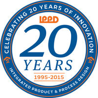
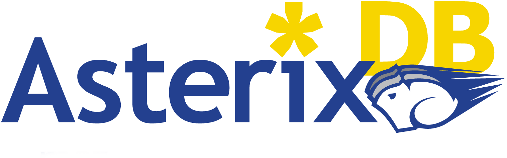

Working in conjunction with Medtronic Inc. and a team of interdisciplinary engineers to develop a closed-loop neuro-stimulation system to patients with heart conditions and Tourettes. We are using an electroencephalogram (EEG), an electromyography (EMG), a processor, and an accelerometer to gather data from the user's body and then have our stimulator decide whether or not the patient needs to be shocked. This valuable experience is helping me to build leadership, managerial, people, and technical skills. IPPD at UF is a program that gives engineering students from all disciplines the ability to participate in a year-long project featured by a company. Companies that sponsor the program and submit projects include Walt Disney World, Harris Corporation, Lockheed Martin, and Siemens, to name a few. The engineers that are accepted into the program are placed into teams based on each project's needs and availability (i.e. Harris may require 3 electrical engineers, 2 computer engineers, 1 mechanical engineer, and 1 biomedical engineer). The program grants invaluable experience in solving real-world problems and I personally encourage every engineer to apply during the Fall semester of their Senior year. |
 | |
I was a Summer College Intern at NextEra Energy, more specifically Florida Power & Light from June 1st, 2015, until August 7th, 2015. There, I worked under the Power Delivery - Information Management department where I was in charge of testing and improving the hybrid mobile applications that FPL had available. I was later tasked with writing code that would update the PDGO application for FPL, and then using Cordova to make it compatible with iOS, Android, and various other mobile devices. Some of the languages that I worked with during the update process were Javascript, HTML, CSS, jQuery, SQL, and some JSON and AJAX. The experience gave me a deeper understanding of web applications, how to utilize Cordova to build hybrid apps rather than having to learn Objective-C/Swift for iOS, XML/Java for Android, etc., and it taught me how a real-world working environment functions. |
||
I performed undergraduate research on the big data platform Asterix Database under the supervision of Doctor Markus Schneider. Throughout my research, I gained an extremely deep insight into concepts such as big data management platforms, NoSQL databases, CAP Theorem, Scalability, Data Mining, Log-Structured Merge (LSM) Trees, Managix, and basic information about other platforms such as SciDB and Hadoop. Furthermore, the research showed me the process in which AsterixDB stores information, the data structures that it uses to hold its data, how to create a data feed to a social site such as Twitter and extract massive amounts of public data, and the internal, logical/physical/conceptual layers of AsterixDB and how they function together. In addition to the above topics that I explored, I also became familiar with a new data modeling and query language. The developers of AsterixDB created their own languages: ADM and AQL. ADM stands for Asterix Data Model while AQL represents Asterix Query Language. ADM provides a rich set of ways to structure data while AQL contains a massive array of queries to retrieve and alter that information. Undergraduate research for Doctor Markus Schneider allowed me to learn a tremendous amount of information about databases in general, but particularly big data platforms. It was a valuable experience, from my point of view, and I am very grateful for the opportunity that he provided me with. |
 | |
Contact Information
E-Mail: fperez191993@yahoo.com